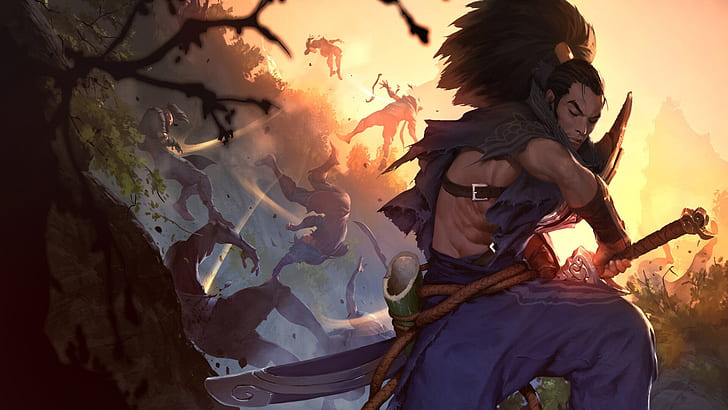
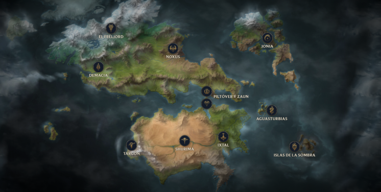

League of Legends (también conocido por sus siglas LoL), es un videojuego multijugador de arena de batalla en línea desarrollado y publicado por Riot Games. Inspirándose en Defense of the Ancients, un mapa personalizado para Warcraft III, los fundadores de Riot buscaron desarrollar un juego independiente del mismo género. Desde su lanzamiento en octubre de 2009, LoL ha sido un juego gratuito y se monetiza a través de la compra de elementos para la personalización de personajes. El juego está disponible para Microsoft Windows y macOS.
En el juego, dos equipos de cinco jugadores luchan en un combate jugador contra jugador, cada equipo ocupando y defendiendo su mitad del mapa. Cada uno de los diez jugadores controla un personaje, conocido como "campeón", con habilidades únicas y diferentes estilos de juego. Durante una partida, los campeones se vuelven más poderosos acumulando puntos de experiencia y ganando oro que se emplea para la compra de artículos para derrotar al equipo contrario. En el modo principal de juego de LoL, League, "La Grieta del Invocador", un equipo gana al abrirse paso hasta la base enemiga y destruir su "nexo", una gran estructura ubicada dentro de la cual se emanan tres líneas de súbditos o "minions", personajes no jugadores que al ser eliminados por el equipo enemigo otorgan oro y experiencia.
League of Legends ha recibido críticas generalmente positivas; los críticos destacaron su accesibilidad, diseños de personajes y valor de producción. La larga antigüedad del juego ha resultado en una revaluación crítica, con reseñas con una tendencia positiva; el comportamiento negativo y abusivo de sus jugadores en el juego, criticado desde su lanzamiento, persiste a pesar de los intentos de Riot por solucionar el problema. En 2019, LoL alcanzó regularmente un máximo de ocho millones de jugadores simultáneos, y su popularidad ha llevado a vinculaciones como videos musicales, cómics, cuentos y hasta una serie animada de Netflix, Arcane. Su éxito también ha generado varios videojuegos derivados, incluida una versión móvil, un juego de cartas coleccionables digital y un juego de rol por turnos, entre otros. Se está desarrollando un juego de rol multijugador masivo en línea basado en LoL.
Citado regularmente como el deporte electrónico más grande del mundo, el juego tiene una escena competitiva internacional que consta de 12 ligas. Estas ligas locales culminan en el Campeonato Mundial anual de League of Legends. El evento de 2019 registró más de 100 millones de espectadores únicos, alcanzando un máximo de 44 millones de espectadores simultáneos durante la final. Los eventos nacionales e internacionales se han transmitido en sitios web de transmisión en vivo como Twitch, YouTube, Bilibili y en el canal de deportes de televisión por cable ESPN.

HISTORIA
existen 11 regiones principales en Runaterra, las cuales tienen sus propias historias, desarrollo, y conflictos. En próximos artículos profundizaremos en las historias de cada una de estas regiones, pero ahora nos limitaremos a hacer un breve resumen. A estas 11 regiones, hay que sumar los dos universos que conviven con los habitantes de Runaterra: ciudad de Bandle y El Vacío.
El Vacío es hogar de bestias horripilantes y salvajes, cuyo único propósito es invadir y devorar todo ser de Runaterra. La entrada a este lugar se encuentra en algún lugar del desierto de Shurima.
Shurima, otra de las regiones de League of Legends, se encuentra en el sur de Runaterra. Antaño fue un gran Imperio que llegó a dominar prácticamente la totalidad del mundo, cayó por la ingenuidad de su emperador, el ascendido Azir. Imperio de dioses que bebe mucho de la cultura egipcia, tiene mucha importancia en la historia antigua de League of Legends
Otra región ancestral que perdió poder es Targon. En la antigüedad fue una región poderosa que llegó incluso a esclavizar y encadenar a dragones cósmicos como Aurelión Sol, el creador de estrellas. Nación de grandes protectores ascendidos y elegidos por poderes superiores, ahora es un lugar que se encuentra prácticamente deshabitado.
El monte Targon, el punto más alto de Runaterra
Itxal es otro de los imperios más antiguos, sino el que más, de toda Runaterra. Ubicada al este de Shurima, siempre se ha mantenido al margen del resto de naciones e imperios, y utiliza la magia y trucos simples para ocultarse y mantenerse independientes para el resto del mundo.
Tanto Las Islas de las Sombras como Aguasturbias tienen una historia un poco peculiar y algo compleja como para entrar ahora en faena. A modo de resumen, diremos que Las Islas de las Sombras es una isla ocupada por seres malditos, y Aguasturbias tendría su equivalente en la Isla Tortuga de los piratas.
El resto de regiones forman la historia más actual de League of Legends. Al norte de Runaterra encontramos a los dos imperios más poderosos, Demacia y Noxus. Este primer imperio es un imperio conservador y muy reacio a los cambios. El segundo es todo lo contrario. Noxus es un imperio expansionista que acoge a todo el que quiera formar parte de él. No obstante, es un imperio que pretende unir toda Runaterra bajo su yugo, pues es muy cruento.
Más al norte de la península encontramos la región de Freljord, la región helada. Formada por multitud de tribus tribales, sobreviven a frías temperaturas. Son fuertes luchadores, y sus habitantes son testigos de 3 de las principales entidades supremas de Runaterra. Sus tribus luchan entre ellas por gobernar la región.
Ashe, una de las reinas tribales de Freljord, observando su región
En unas islas al norte de la península encontramos Jonia, el reino espiritual de Runaterra. Llena de seres que practican la meditación y las artes marciales, son una región que buscan la paz y el equilibrio con su entorno. No obstante, son grandes luchadores, y no tienen miedo a defender su tierra de invasores.existen 11 regiones principales en Runaterra, las cuales tienen sus propias historias, desarrollo, y conflictos. En próximos artículos profundizaremos en las historias de cada una de estas regiones, pero ahora nos limitaremos a hacer un breve resumen. A estas 11 regiones, hay que sumar los dos universos que conviven con los habitantes de Runaterra: ciudad de Bandle y El Vacío.
El Vacío es hogar de bestias horripilantes y salvajes, cuyo único propósito es invadir y devorar todo ser de Runaterra. La entrada a este lugar se encuentra en algún lugar del desierto de Shurima.
Shurima, otra de las regiones de League of Legends, se encuentra en el sur de Runaterra. Antaño fue un gran Imperio que llegó a dominar prácticamente la totalidad del mundo, cayó por la ingenuidad de su emperador, el ascendido Azir. Imperio de dioses que bebe mucho de la cultura egipcia, tiene mucha importancia en la historia antigua de League of Legends.
Otra región ancestral que perdió poder es Targon. En la antigüedad fue una región poderosa que llegó incluso a esclavizar y encadenar a dragones cósmicos como Aurelión Sol, el creador de estrellas. Nación de grandes protectores ascendidos y elegidos por poderes superiores, ahora es un lugar que se encuentra prácticamente deshabitado.
El monte Targon, el punto más alto de Runaterra
Itxal es otro de los imperios más antiguos, sino el que más, de toda Runaterra. Ubicada al este de Shurima, siempre se ha mantenido al margen del resto de naciones e imperios, y utiliza la magia y trucos simples para ocultarse y mantenerse independientes para el resto del mundo.
Tanto Las Islas de las Sombras como Aguasturbias tienen una historia un poco peculiar y algo compleja como para entrar ahora en faena. A modo de resumen, diremos que Las Islas de las Sombras es una isla ocupada por seres malditos, y Aguasturbias tendría su equivalente en la Isla Tortuga de los piratas.
El resto de regiones forman la historia más actual de League of Legends. Al norte de Runaterra encontramos a los dos imperios más poderosos, Demacia y Noxus. Este primer imperio es un imperio conservador y muy reacio a los cambios. El segundo es todo lo contrario. Noxus es un imperio expansionista que acoge a todo el que quiera formar parte de él. No obstante, es un imperio que pretende unir toda Runaterra bajo su yugo, pues es muy cruento.
Más al norte de la península encontramos la región de Freljord, la región helada. Formada por multitud de tribus tribales, sobreviven a frías temperaturas. Son fuertes luchadores, y sus habitantes son testigos de 3 de las principales entidades supremas de Runaterra. Sus tribus luchan entre ellas por gobernar la región.
Ashe, una de las reinas tribales de Freljord, observando su región
En unas islas al norte de la península encontramos Jonia, el reino espiritual de Runaterra. Llena de seres que practican la meditación y las artes marciales, son una región que buscan la paz y el equilibrio con su entorno. No obstante, son grandes luchadores, y no tienen miedo a defender su tierra de invasores.
Nos queda por hablar de Piltover y Zaun, dos ciudades que conviven en el estrecho de la península. Una, ciudad de progresos y tecnología. La otra, ciudad donde la moral escasea y la delincuencia abunda. Entre ellas tienen muchos problemas debido a la diferencia de estatus de sus ciudadanos. La serie de Arcane, producto audiovisual de League of Legends que podremos ver en Netflix el próximo 6 de noviembre, estará ambientada en estas dos ciudades.
Piltover en un arte promocional de Arcane
Por último, hablar de la ciudad de Bandle. Esta ciudad está formada por seres muy bajitos, inteligentes, y con gran afinidad a la magia conocidos como yordles. Nadie sabe dónde se encuentra concretamente la ciudad de Bandle. Lo único que se sabe es que en Runaterra hay un portal que une ambos universos, y que, a veces, los yordles se dejan caer por la península y se dejan ver al resto de habitantes.
Aunque no aparece en el mapa, en la antigüedad hubo ciudades submarinas habitadas por seres inteligentes. Fueron las primeras ciudades de Runaterra, y se encontraban ubicadas cerca de Aguasturbias.
Nos queda por hablar de Piltover y Zaun, dos ciudades que conviven en el estrecho de la península. Una, ciudad de progresos y tecnología. La otra, ciudad donde la moral escasea y la delincuencia abunda. Entre ellas tienen muchos problemas debido a la diferencia de estatus de sus ciudadanos. La serie de Arcane, producto audiovisual de League of Legends que podremos ver en Netflix el próximo 6 de noviembre, estará ambientada en estas dos ciudades.
Piltover en un arte promocional de Arcane
Por último, hablar de la ciudad de Bandle. Esta ciudad está formada por seres muy bajitos, inteligentes, y con gran afinidad a la magia conocidos como yordles. Nadie sabe dónde se encuentra concretamente la ciudad de Bandle. Lo único que se sabe es que en Runaterra hay un portal que une ambos universos, y que, a veces, los yordles se dejan caer por la península y se dejan ver al resto de habitantes.
Aunque no aparece en el mapa, en la antigüedad hubo ciudades submarinas habitadas por seres inteligentes. Fueron las primeras ciudades de Runaterra, y se encontraban ubicadas cerca de Aguasturbias.

LISTA DE JUEGOS
con una comapañia muy grande como es la de riot games tubo muchos juegos relacionados von legue of legendes incluida las series realacionadas a la misma incluyendo torneos mundiales entre otros
Entregas principales de Assassin's Creed
legue of legends
legue of runaterra
valorant
team fight tactics
ruined of king
arcane(serie)